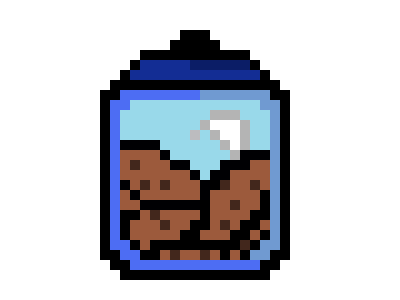
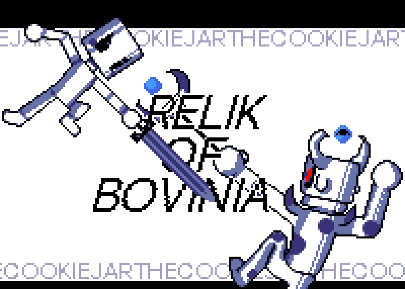

This is where the Cookie Bandit's projects are displayed.
See my githubClick on this Itch.io Link, OR play the game in Website. A computer is required though
Itch.io
This is a zelda based game where you have to fight enemies in order to make it to a temple. There, you will fight an evil cow.
It took at least 4 months for the coding alone. The art took me the entire week of our second winter break otherwise known as ski-week for me. Essentially 10 hours or more straight each day. I even had to make major tweaks to items even later. To estimate, it probably took over 500 hours. Obviously we couldn't code the entire time during the 4 months as we had other classes and we only had class twice a week and that too for only 1 and a half hours. But we tried to work on it at home as much as possible.
pixilart.com :D
My partner really liked the idea of a zelda based game so I foolishly agreed and that's sort of when we began this disastrous plan of ours which took way too much time. I came up with all the enemy concepts and we pretty much went with the flow. He designed the game mechanics of the player, my other partner designed the mechanics of the boss and I decided the gameplay mechanics.